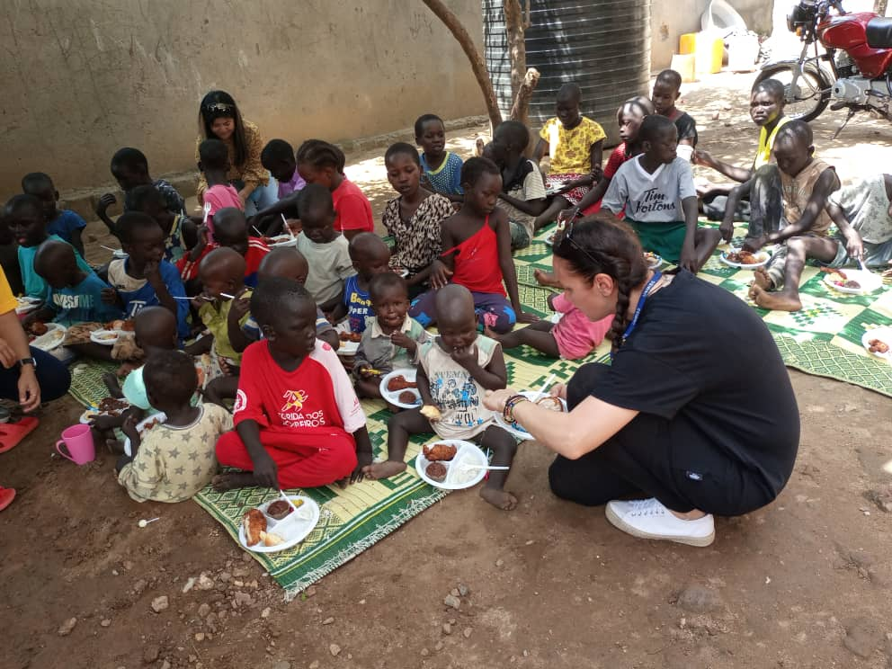
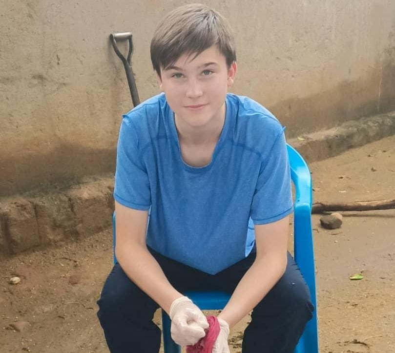
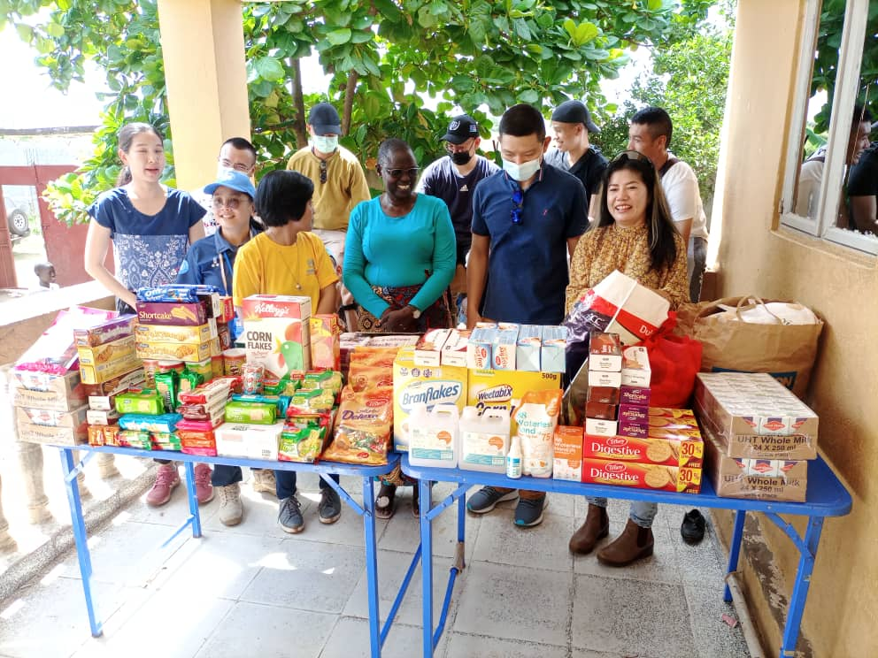
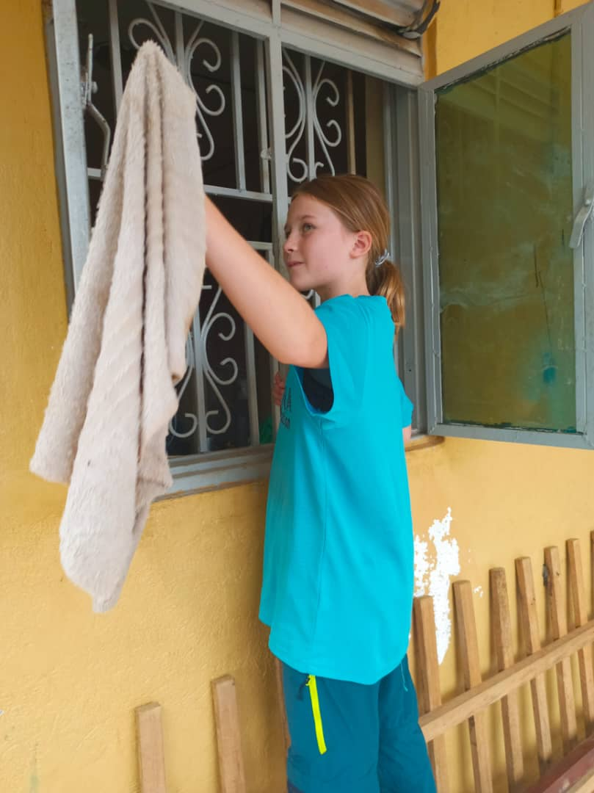
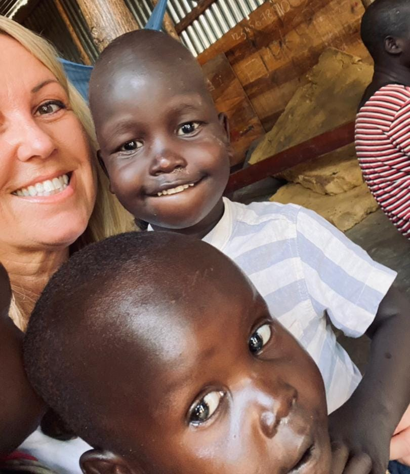
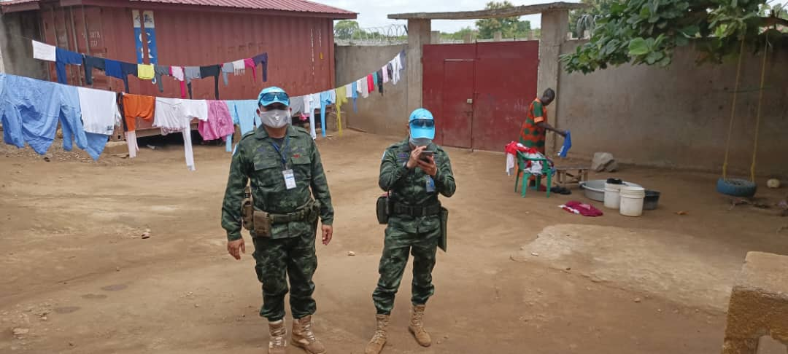
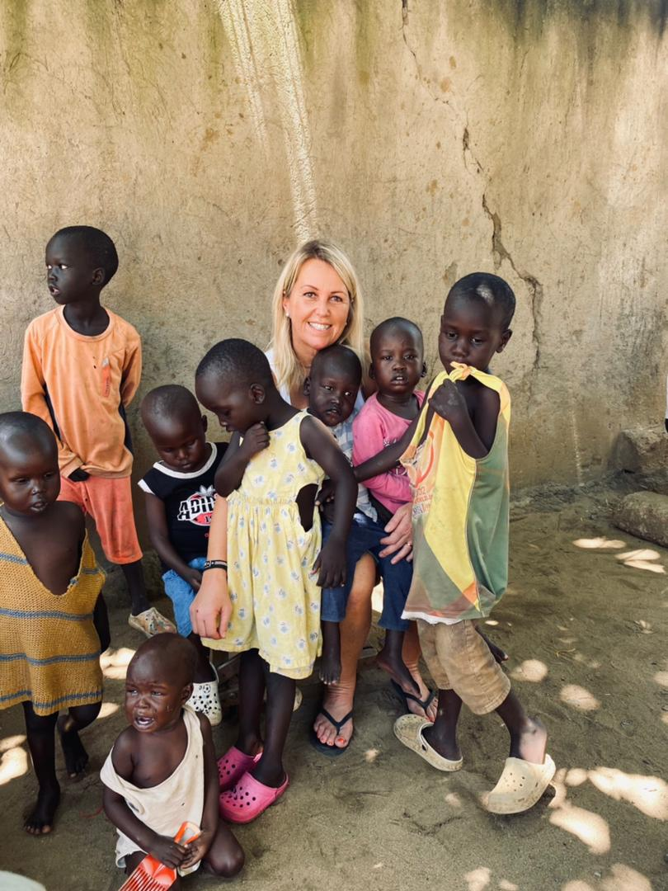
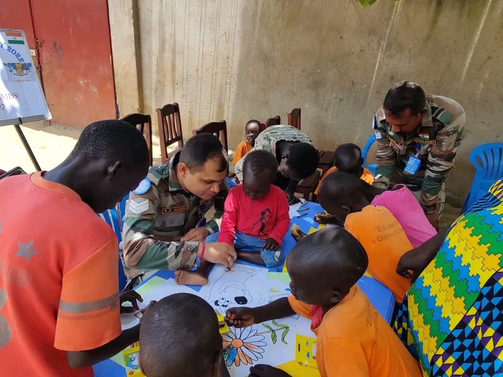
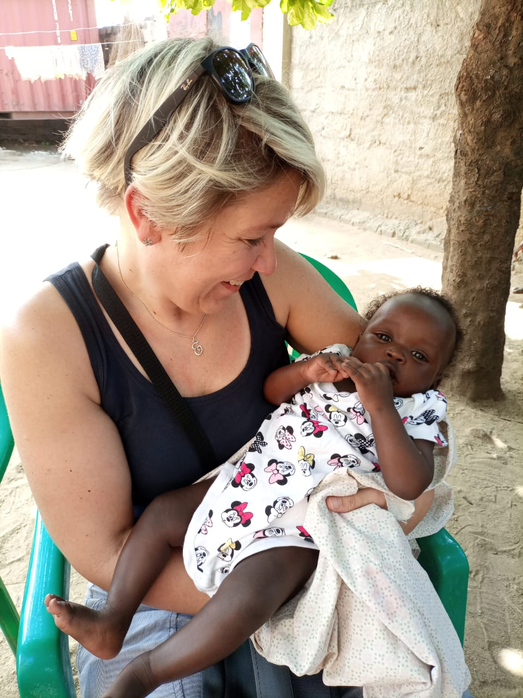
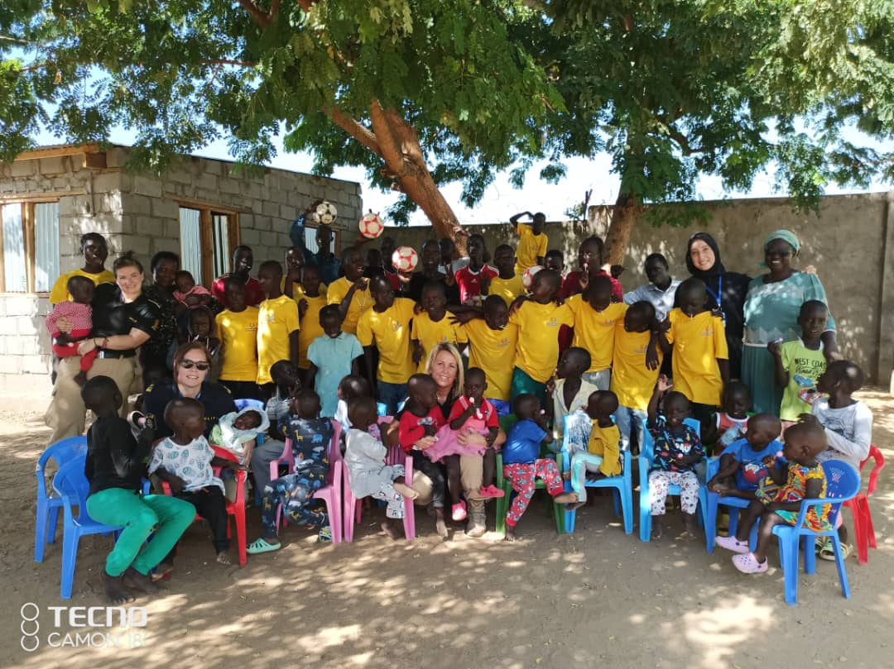

"How wonderful is it that nobody need wait a single moment before starting to improve the world"
Years of Impact
Children Rescued
Ages Supported
Since 2012, every meal shared, every child comforted and every opportunity created has been made possible by people who chose to care. From generous neighbours and volunteers to humanitarian organisations and lifelong partners, every act of kindness has become part of the story of Juba Rescue Centre. Together, we have built more than support—we have built hope.
Nutritious meals provided through generous donations.
Children supported with learning opportunities and school sponsorship.
Medical care and counselling made possible through partnerships.
Providing safety, dignity and a brighter future.
Creating a loving community where every child belongs.
Clothing, toiletries and everyday necessities for growing children.

Since its establishment in 2012, Juba Rescue Centre has been blessed by the generosity of individuals, families and members of the local community who have continuously supported its mission of caring for vulnerable children. Their kindness has taken many forms, including donations of food, clothing, bedding, toiletries, school supplies, toys and other essential items that help meet the children's everyday needs.
Many of these contributions are delivered directly to the centre by well-wishers who are passionate about improving the lives of the children. These acts of generosity not only provide practical support but also remind the children that they are valued, loved and supported by a compassionate community. Every donation, regardless of its size, plays an important role in helping the centre provide a safe, nurturing and dignified environment for every child in its care.
Every visit leaves behind more than donations. It leaves memories, encouragement and hope.

Community Visit
Food Donation
Volunteer Day
Brightened Smiles
Medical Outreach
Sharing Joy
Over the years, Juba Rescue Centre has been privileged to work alongside a number of local and international organisations whose partnership has strengthened the care and support provided to vulnerable children. Organisations such as IsraAid, UNICEF, CARITAS, Luena Foundation and other valued partners have contributed their expertise, resources and services to improve the wellbeing of the children and the overall capacity of the centre.
Their support has included the provision of professional counselling services, social work and case management, educational assistance, child protection programmes, psychosocial support and other interventions aimed at promoting the safety, health and development of children. These partnerships continue to play an important role in helping the centre respond to the diverse and evolving needs of the children in its care.
Juba Rescue Centre was founded.
Community volunteers began regular support.
Educational partnerships expanded.
Child protection programmes strengthened.
Hundreds of children continue receiving care and hope.
A permanent home built together.

Child sponsorship is one of the most meaningful ways supporters can make a lasting difference in a child's life. Through sponsorship, generous individuals and organisations help meet a child's educational expenses, healthcare needs, nutrition, clothing and other daily necessities, providing the stability and resources needed for healthy growth and development. These contributions ensure that children have access to opportunities that might otherwise be beyond their reach.
In addition to sponsorship, Juba Rescue Centre supports community and family fostering where it is safe and in the best interests of the child. Suitable foster families are carefully identified and assessed before placement, and our social worker conducts regular follow-up visits to monitor each child's wellbeing, ensure they remain safe, and provide ongoing guidance and support to both the child and the foster family. Through both sponsorship and fostering, we strive to give every child the opportunity to grow up in a secure, caring and supportive environment.

As Juba Rescue Centre looks to the future, we remain committed to building strong and sustainable partnerships that will expand opportunities for every child in our care. We continue to seek the support of individuals, organisations, businesses, faith-based institutions and development partners who share our vision of providing vulnerable children with a safe, loving and stable environment in which they can thrive.
Our priorities include securing a permanent home for the centre, improving access to quality education and healthcare, strengthening child protection services, expanding vocational and life-skills training, and enhancing the facilities and resources available to the children. Every partnership, donation and act of generosity whether large or small, plays a vital role in transforming lives and creating brighter, more hopeful futures for the children and young people we serve.
Every partnership creates new opportunities, new hope and new beginnings for the children we serve.
Partner With Us